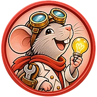

Acceso


¿Tienes la clave?
Introduce tu clave de licencia para desbloquear el contador sin límites.
¿Ya la compraste? Tu clave está en el email de confirmación de Buy Me a Coffee.
Introduce tu clave de licencia para desbloquear el contador sin límites.
¿Ya la compraste? Tu clave está en el email de confirmación de Buy Me a Coffee.

Recuento final de la colonia
¿Qué familias juegan?
Jugadores en orden de turno final
Ordénalos según el orden de turno al acabar la 5.ª ronda (tras la Cabaña del Alquimista). Sirve para el desempate. Toca la rata para verla en grande.

Este contador funciona solo en vertical.
Gira el móvil para seguir contando queso.

 Puntuación final
Puntuación finalAl acabar la 5.ª ronda se suman a los PV del marcador:
Desempate: gana quien vaya antes en el orden de turno.
![](data:image/svg+xml,<svg xmlns=%22http://www.w3.org/2000/svg%22 viewBox=%220 0 64 64%22><g stroke=%22%233a2414%22 stroke-width=%223.2%22 stroke-linejoin=%22round%22 stroke-linecap=%22round%22><circle cx=%2232%22 cy=%2232%22 r=%2225%22 fill=%22%236f9cc4%22/><path d=%22M14 20 Q20 15 27 17 Q30 22 25 26 Q27 31 22 35 Q16 34 12 29 Q11 24 14 20 Z%22 fill=%22%236f8f4e%22/><path d=%22M35 13 Q43 12 50 18 Q52 25 46 27 Q41 24 38 28 Q42 34 40 41 Q35 47 31 45 Q30 38 33 33 Q29 29 31 22 Q33 17 35 13 Z%22 fill=%22%236f8f4e%22/><path d=%22M46 40 Q52 39 53 44 Q50 50 45 48 Z%22 fill=%22%236f8f4e%22/></g><g fill=%22none%22 stroke=%22%233a2414%22 stroke-width=%222%22 stroke-linecap=%22round%22 opacity=%22.55%22><ellipse cx=%2232%22 cy=%2232%22 rx=%2211%22 ry=%2225%22/><path d=%22M7 32 H57%22/><path d=%22M11 19 Q32 25 53 19%22/><path d=%22M11 45 Q32 39 53 45%22/></g><path d=%22M17 17 Q22 12 29 11%22 fill=%22none%22 stroke=%22%23e8f1f8%22 stroke-width=%222.6%22 stroke-linecap=%22round%22/><circle cx=%2232%22 cy=%2232%22 r=%2225%22 fill=%22none%22 stroke=%22%233a2414%22 stroke-width=%223.2%22/></svg>) Idioma
Idioma